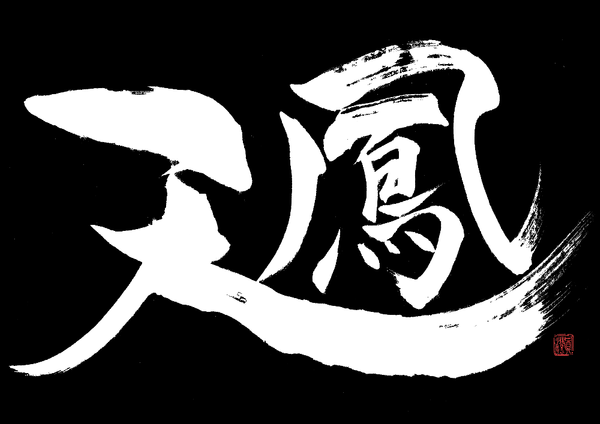
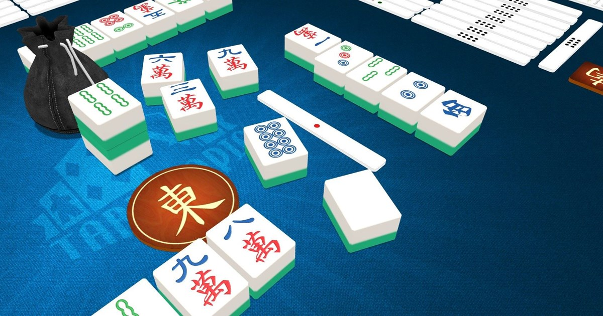
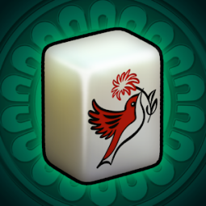
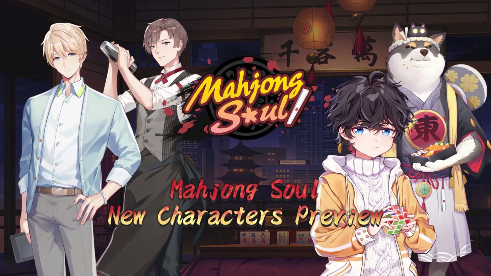

Shortcuts
Tenhou
Tabletopia
Red Mahjong
Mahjong Soul
tenhou.net: is a popular site to play and has a consistent player base. The only issue is for new players, the tiles are not marked with english characters, so knowing what pieces you have can be a pain. The site is also in japanese so you will need an english guide to navigate and create an account. The positives to this site are the ability to keep track of your stats such as amount of times dealt in, wins, losses, typical hands melded, and total average points in a game. It is also free to play so there is nothing to lose but time.
Tabletopia offers a version of mahjong that doesn't support online play, but does allow for local hosts and the ability to invite friends. There are no records of games played, but the interface is much more developed. There are times that there game experiences bugs and because of this many people stray away but it gets the job done.
There are many mobile games to play on but the player base is scattered, so its best to pick between the most popular ones. The two with the highest player base are Red Mahjong GC and Mahjong Soul.
Red Mahjong GC is very bare bones as far as animations and interface go, but because of its simplicity it draws in a more serious crowd of players from all over. There is no stats tracking, but you can make an account and add friends who you want to rematch or send out invites to random people. It also has the ability to create open lobbies for anyone to join.
Mahjong Soul has an anime style to it with multiple animations and graphics. It also uses a gacha style approach and rewards players who win with an in game currency that can be used to buy new characters to play mahjong as or to buy animations that happen with certain winning hands. The design hurts it in some regards as many of the older generation of players don't see the appeal. The game also keeps a record of all games played among other stats similar to tenhou.net.
{% endblock %} {% block footnotes %}Icons for online platforms can be clicked to acess them.
{% endblock %}